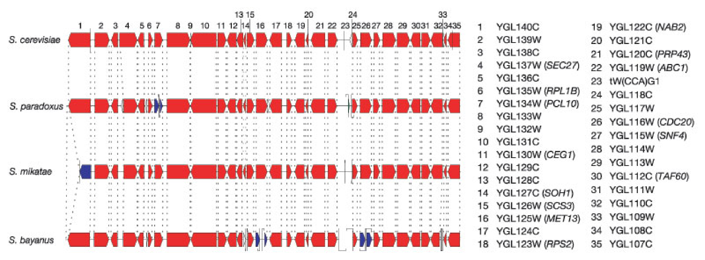
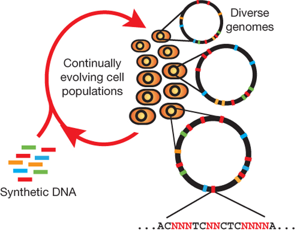
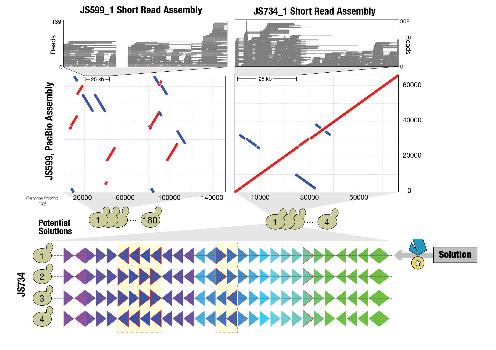
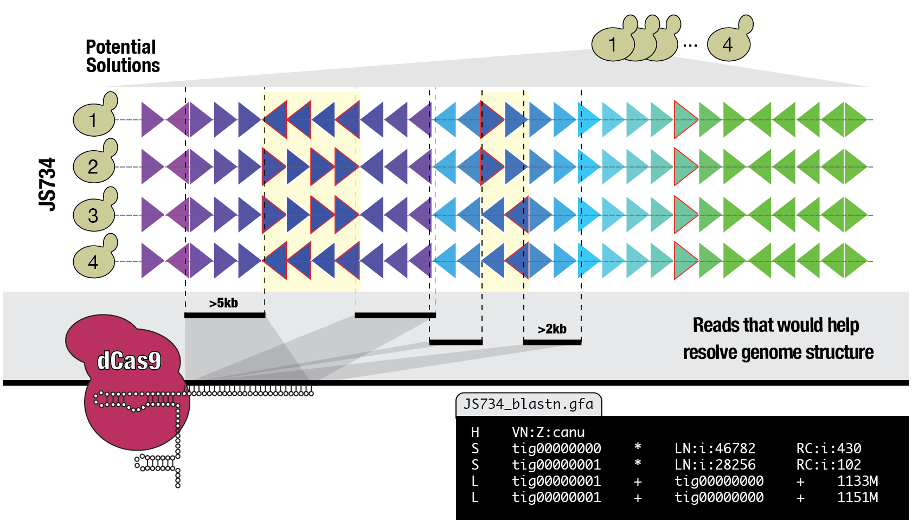

Transcription from a SCRaMbLEd genome
Follow along on 
bit.ly/2fKpAbO
Why are genomes organized as we observe them?
Synteny is conserved across closely related yeast species
Synteny decreases with evolutionary distance
Genome architecture shapes transcriptional landscape

Regulatory signals can propagate between neighbouring promoters
“...gene shuffling could be evolutionarily restricted in regions that support beneficial interactions between loci, whereas in other regions, new rearrangements could give rise to novel interaction networks that are mediated by ncRNAs and antisense transcripts.”
Can we evaluate how genome architecture mediates phenotype through transcriptional mechanisms experimentally?
Experimental Evolution?
Multiplexed Automated Genome Engineering?
MAGE generates sequence diversity at many targeted chromosomal locations across a large population of cells through repeated introduction of synthetic DNA

Encode generation of sequence diversity by design: Sc2.0

International consortium for design and synthesis

...synthesis is ongoing...
Gene shuffling with SCRaMbLE
Synthetic Chromosome Recombination and Modification by LoxP-mediated Evolution

How is the transcriptional landscape modified by genome SCRaMbLEing?

What are the sequences of SCRaMbLEd genomes?
Andreas64 strains derived from SCRaMbLE of SynIXR

Each genome segment identified by color and number. ~1 gene per segment. SCRaMbLEgram
Extensive heterogeneity among SCRaMbLE strains

Many genomes can not be assembled uniquely from short reads
JS794 has four potential solutions
3rd-generation long-read technologies to solve SCRaMbLE genomes
Workflow for de novo assembly with long-reads
Parental strain (JS94) can be solved with single SMRT cell

Long-read assembly can unambiguously solve SCRaMbLE genomes
However, strain JS734 could only be solved with data from several SMRT cells
-
Is it possible to solve every SCRaMbLE genome?
-
If so, under what conditions (e.g. coverage, read-length)?
Simulate PacBio reads to assess assembly conditions: workflow
Running many simulations? -> workflow management software
Workflow management with Snakemake

Workflow management with Snakemake
import glob
COVERAGE = [7, 10, 15, 30, 45, 60]
REPS = [i for i in range(1,11)]
REFERENCES = ["JS94_1","JS734_1"]
shell.prefix("sleep 60; ")
rule all:
input:
"aggStats.txt"
rule simulator:
input:
output:
"samples/c{coverage}_{rep}.fasta"
params:
m="3986",
s="3057",
x="300",
dam="JS734_1.dam"
shell:
"simulator {params.dam} -U -m{params.m} -s{params.s} -x{params.x} -c{wildcards.coverage} > samples/c{wildcards.coverage}_{wildcards.rep}.fasta"
rule canu:
input:
"samples/c{coverage}_{rep}.fasta"
output:
"samples/assembly/c{coverage}_{rep}.contigs.fasta",
"samples/assembly/c{coverage}_{rep}.correctedReads.fasta.gz",
"samples/assembly/c{coverage}_{rep}.gfa"
params:
genomeSize="0.066m",
seq_lib_type = "pacbio-raw", #library input type
use_grid = "0", #attach to grid
corMhapSensitivity = "high",
corMinCoverage = "0",
minOverlapLength = "200",
corMaxEvidenceErate = "0.3",
errorRate = "0.035",
corOutCoverage = "1000",
minReadLength = "200",
name="c{coverage}_{rep}"
shadow: "full"
shell:
"if test -f {output}; then rm {output}; fi && "
"canu -p {params.name} -d samples/assembly "
"genomeSize={params.genomeSize} -{params.seq_lib_type} "
"{input} useGrid={params.use_grid} corMhapSensitivity={params.corMhapSensitivity} "
"corMinCoverage={params.corMinCoverage} minOverlapLength={params.minOverlapLength} "
"errorRate={params.errorRate} && "
"touch {output}"
rule circlator:
input:
contigs="samples/assembly/c{coverage}_{rep}.contigs.fasta",
creads="samples/assembly/c{coverage}_{rep}.correctedReads.fasta.gz"
output:
"samples/assembly/c{coverage}_{rep}.circlator.fasta"
threads: 20
shadow: "full"
shell:
"if test -f {output}; then rm {output}; fi && "
"circlator all --threads {threads} {input.contigs} {input.creads} circlator && "
"mv ./circlator/06.fixstart.fasta samples/assembly/c{wildcards.coverage}_{wildcards.rep}.circlator.fasta && "
"touch {output}"
rule mummer:
input:
query="samples/assembly/c{coverage}_{rep}.circlator.fasta",
ref="/g/steinmetz/brooks/git/steinmetz-lab/yeast2_0/scramble/seq/{reference}.fasta"
output:
"samples/alignment/c{coverage}_{rep}-{reference}.originFix.txt"
threads: 20
shell:
"Rscript /g/steinmetz/brooks/git/steinmetz-lab/yeast2_0/scripts/alignANDmove.R "
"-r {input.ref} "
"-q {input.query} "
"-m samples/alignment/c{wildcards.coverage}_{wildcards.rep}-{wildcards.reference}"
rule aggregate:
input:
expand("samples/alignment/c{coverage}_{rep}-{reference}.originFix.txt", coverage=COVERAGE, rep=REPS, reference=REFERENCES)
output:
"aggStats.txt"
shell:
"""
echo 'S1\tE1\tS2\tE2\tLEN1\tLEN2\tPERCENTSIM\tREF\tQUERY\tSAMPLE' > {output} &&
for x in {input}; do
cat $x >> {output}
done
"""
Complete assembly achieved frequently at high coverage for JS794

Some SCRaMbLE genomes are full of inverted repeats
Will increased coverage still lead to complete assembly?

Increased coverage doesn't guarantee resolution of more complicated genomes

Some strains require a combination of depth and read length that is currently unachievable

CRISPR-dCas9-mediated long-fragment enrichment strategy
Competition from PacBio and Oxford Nanopore
Next steps
- dCas9-mediated enrichment of SynIXR segments
- PepCore purification of 6XHis-MBP-dCas9-3XFLAG / IVT sgRNAs ready / qPCR enirchment assay
- Andreas is a champ!
- Proof of concept: enrichment-assisted de novo assembly
- Design platform for automated sgRNA selection from assembly (gfa)
- Multi-chromosome SCRaMbLE??
What happens to the transcriptional landscapes in a SCRaMbLEd genome?
How is the transcriptional landscape modified by genome SCRaMbLEing?
Transcript Isoform sequencing: TIF-Seq
- Which SCRaMbLE strain?
- Which conditions?
Which SCRaMbLE strains have the most disrupted transcriptome?
mTIF widths after liftOver to SynIXR
SynIXR contains a variety of mTIFs
A majority of SynIXR mTIFs could be disrupted by SCRaMbLE
loxPsym sites occur near ends of SCRaMbLE-sensitive mTIFs
Some mTIFs are differentially expressed in glucose vs. galactose
SynIXR mTIFs are expressed similarly in glucose vs. galactose
Next steps
- Look for SCRaMbLE-sensitive bidirectional promoters/antisense transcripts in Zhenyu's data
- Choose 2 SCRaMbLE strains for TIF-Seq (4 total strains for first TIF-Seq run)
- Delay selection of condition. Run first in standard YPD conditions.
Are there entirely new transcriptional features in a SCRaMbLEd genome?